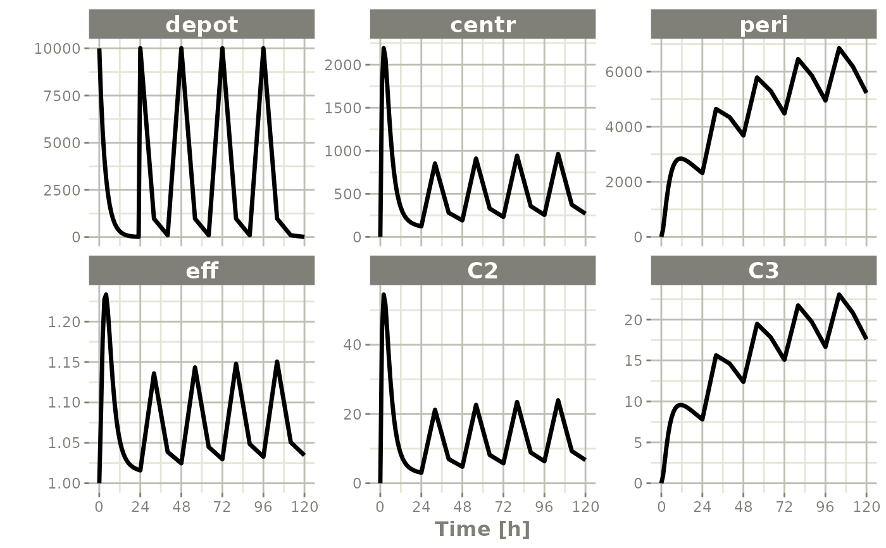

Create a dynamic ODE-based model object suitably for translation into fast C code
Usage
rxode2(
model,
modName = basename(wd),
wd = getwd(),
filename = NULL,
extraC = NULL,
debug = FALSE,
calcJac = NULL,
calcSens = NULL,
collapseModel = FALSE,
package = NULL,
...,
linCmtSens = c("linCmtA", "linCmtB", "linCmtC"),
indLin = FALSE,
verbose = FALSE,
fullPrint = getOption("rxode2.fullPrint", FALSE)
)
RxODE(
model,
modName = basename(wd),
wd = getwd(),
filename = NULL,
extraC = NULL,
debug = FALSE,
calcJac = NULL,
calcSens = NULL,
collapseModel = FALSE,
package = NULL,
...,
linCmtSens = c("linCmtA", "linCmtB", "linCmtC"),
indLin = FALSE,
verbose = FALSE,
fullPrint = getOption("rxode2.fullPrint", FALSE)
)
rxode(
model,
modName = basename(wd),
wd = getwd(),
filename = NULL,
extraC = NULL,
debug = FALSE,
calcJac = NULL,
calcSens = NULL,
collapseModel = FALSE,
package = NULL,
...,
linCmtSens = c("linCmtA", "linCmtB", "linCmtC"),
indLin = FALSE,
verbose = FALSE,
fullPrint = getOption("rxode2.fullPrint", FALSE)
)Arguments
- model
This is the ODE model specification. It can be:
a string containing the set of ordinary differential equations (ODE) and other expressions defining the changes in the dynamic system.
a file name where the ODE system equation is contained
An ODE expression enclosed in
\{\}(see also the
filenameargument). For details, see the sections “Details” andrxode2 Syntaxbelow.- modName
a string to be used as the model name. This string is used for naming various aspects of the computations, including generating C symbol names, dynamic libraries, etc. Therefore, it is necessary that
modNameconsists of simple ASCII alphanumeric characters starting with a letter.- wd
character string with a working directory where to create a subdirectory according to
modName. When specified, a subdirectory named after the “modName.d” will be created and populated with a C file, a dynamic loading library, plus various other working files. If missing, the files are created (and removed) in the temporary directory, and the rxode2 DLL for the model is created in the current directory namedrx_????_platform, for examplerx_129f8f97fb94a87ca49ca8dafe691e1e_i386.dll- filename
A file name or connection object where the ODE-based model specification resides. Only one of
modelorfilenamemay be specified.- extraC
Extra c code to include in the model. This can be useful to specify functions in the model. These C functions should usually take
doubleprecision arguments, and returndoubleprecision values.- debug
is a boolean indicating if the executable should be compiled with verbose debugging information turned on.
- calcJac
boolean indicating if rxode2 will calculate the Jacobain according to the specified ODEs.
- calcSens
boolean indicating if rxode2 will calculate the sensitivities according to the specified ODEs.
- collapseModel
boolean indicating if rxode2 will remove all LHS variables when calculating sensitivities.
- package
Package name for pre-compiled binaries.
- ...
ignored arguments.
- linCmtSens
The method to calculate the linCmt() solutions
- indLin
Calculate inductive linearization matrices and compile with inductive linearization support.
- verbose
When
TRUEbe verbose with the linear compartmental model- fullPrint
When using
printfwithin the model, ifTRUEprint on every step (except ME/indLin), otherwise whenFALSEprint only when calculating thed/dt
Value
An object (environment) of class rxode2 (see Chambers and Temple Lang (2001))
consisting of the following list of strings and functions:
* `model` a character string holding the source model specification.
* `get.modelVars`a function that returns a list with 3 character
vectors, `params`, `state`, and `lhs` of variable names used in the model
specification. These will be output when the model is computed (i.e., the ODE solved by integration).
* `solve`{this function solves (integrates) the ODE. This
is done by passing the code to [rxSolve()].
This is as if you called `rxSolve(rxode2object, ...)`,
but returns a matrix instead of a rxSolve object.
`params`: a numeric named vector with values for every parameter
in the ODE system; the names must correspond to the parameter
identifiers used in the ODE specification;
`events`: an `eventTable` object describing the
input (e.g., doses) to the dynamic system and observation
sampling time points (see [eventTable()]);
`inits`: a vector of initial values of the state variables
(e.g., amounts in each compartment), and the order in this vector
must be the same as the state variables (e.g., PK/PD compartments);
`stiff`: a logical (`TRUE` by default) indicating whether
the ODE system is stiff or not.
For stiff ODE systems (`stiff = TRUE`), `rxode2` uses
the LSODA (Livermore Solver for Ordinary Differential Equations)
Fortran package, which implements an automatic method switching
for stiff and non-stiff problems along the integration interval,
authored by Hindmarsh and Petzold (2003).
For non-stiff systems (`stiff = FALSE`), `rxode2` uses `DOP853`,
an explicit Runge-Kutta method of order 8(5, 3) of Dormand and Prince
as implemented in C by Hairer and Wanner (1993).
`trans_abs`: a logical (`FALSE` by default) indicating
whether to fit a transit absorption term
(TODO: need further documentation and example);
`atol`: a numeric absolute tolerance (1e-08 by default);
`rtol`: a numeric relative tolerance (1e-06 by default).e
The output of \dQuote{solve} is a matrix with as many rows as there
are sampled time points and as many columns as system variables
(as defined by the ODEs and additional assignments in the rxode2 model
code).}
* `isValid` a function that (naively) checks for model validity,
namely that the C object code reflects the latest model
specification.
* `version` a string with the version of the `rxode2`
object (not the package).
* `dynLoad` a function with one `force = FALSE` argument
that dynamically loads the object code if needed.
* `dynUnload` a function with no argument that unloads
the model object code.
* `delete` removes all created model files, including C and DLL files.
The model object is no longer valid and should be removed, e.g.,
`rm(m1)`.
* `run` deprecated, use `solve`.
* `get.index` deprecated.
* `getObj` internal (not user callable) function.Details
The Rx in the name rxode2 is meant to suggest the
abbreviation Rx for a medical prescription, and thus to
suggest the package emphasis on pharmacometrics modeling, including
pharmacokinetics (PK), pharmacodynamics (PD), disease progression,
drug-disease modeling, etc.
The ODE-based model specification may be coded inside a character
string or in a text file, see Section rxode2 Syntax below for
coding details. An internal rxode2 compilation manager
object translates the ODE system into C, compiles it, and
dynamically loads the object code into the current R session. The
call to rxode2 produces an object of class rxode2 which
consists of a list-like structure (environment) with various member
functions (see Section Value below).
For evaluating rxode2 models, two types of inputs may be
provided: a required set of time points for querying the state of
the ODE system and an optional set of doses (input amounts). These
inputs are combined into a single event table object created
with the function eventTable() or et().
An rxode2 model specification consists of one or more statements
optionally terminated by semi-colons ; and optional comments (comments
are delimited by # and an end-of-line).
A block of statements is a set of statements delimited by curly braces,
{ ... }.
Statements can be either assignments, conditional if/else if/else,
while loops (can be exited by break), special statements, or
printing statements (for debugging/testing)
Assignment statements can be:
simple assignments, where the left hand is an identifier (i.e., variable)
special time-derivative assignments, where the left hand specifies the change of the amount in the corresponding state variable (compartment) with respect to time e.g.,
d/dt(depot):special initial-condition assignments where the left hand specifies the compartment of the initial condition being specified, e.g.
depot(0) = 0special model event changes including bioavailability (
f(depot)=1), lag time (alag(depot)=0), modeled rate (rate(depot)=2) and modeled duration (dur(depot)=2). An example of these model features and the event specification for the modeled infusions the rxode2 data specification is found in rxode2 events vignette.special change point syntax, or model times. These model times are specified by
mtime(var)=timespecial Jacobian-derivative assignments, where the left hand specifies the change in the compartment ode with respect to a variable. For example, if
d/dt(y) = dy, then a Jacobian for this compartment can be specified asdf(y)/dy(dy) = 1. There may be some advantage to obtaining the solution or specifying the Jacobian for very stiff ODE systems. However, for the few stiff systems we tried with LSODA, this actually slightly slowed down the solving.
Note that assignment can be done by =, <- or ~.
When assigning with the ~ operator, the simple assignments and
time-derivative assignments will not be output.
Special statements can be:
Compartment declaration statements, which can change the default dosing compartment and the assumed compartment number(s) as well as add extra compartment names at the end (useful for multiple-endpoint nlmixr models); These are specified by
cmt(compartmentName)Parameter declaration statements, which can make sure the input parameters are in a certain order instead of ordering the parameters by the order they are parsed. This is useful for keeping the parameter order the same when using 2 different ODE models. These are specified by
param(par1, par2,...)
An example model is shown below:
# simple assignment
C2 = centr/V2;
# time-derivative assignment
d/dt(centr) = F*KA*depot - CL*C2 - Q*C2 + Q*C3; Expressions in assignment and if statements can be numeric or logical.
Numeric expressions can include the following numeric operators +, -, *, /, ^ and those mathematical functions defined in the C or the R math
libraries (e.g., fabs, exp, log, sin, abs).
You may also access the R’s functions in the R math libraries,
like lgammafn for the log gamma function.
The rxode2 syntax is case-sensitive, i.e., ABC is different than
abc, Abc, ABc, etc.
Identifiers
Like R, Identifiers (variable names) may consist of one or more
alphanumeric, underscore _ or period . characters, but the first
character cannot be a digit or underscore _.
Identifiers in a model specification can refer to:
State variables in the dynamic system (e.g., compartments in a pharmacokinetics model).
Implied input variable,
t(time),tlast(last time point), andpodo(oral dose, in the undocumented case of absorption transit models).Special constants like
pior R’s predefined constants.Model parameters (e.g.,
karate of absorption,CLclearance, etc.)Others, as created by assignments as part of the model specification; these are referred as LHS (left-hand side) variable.
Currently, the rxode2 modeling language only recognizes system state
variables and “parameters”, thus, any values that need to be passed from
R to the ODE model (e.g., age) should be either passed in the params
argument of the integrator function rxSolve() or be in the supplied
event data-set.
There are certain variable names that are in the rxode2 event tables.
To avoid confusion, the following event table-related items cannot be
assigned, or used as a state but can be accessed in the rxode2 code:
cmtdvidaddlssrateid
However the following variables are cannot be used in a model specification:
evidii
Sometimes rxode2 generates variables that are fed back to rxode2.
Similarly, nlmixr generates some variables that are used in nlmixr
estimation and simulation. These variables start with the either the
rx or nlmixr prefixes. To avoid any problems, it is suggested to not
use these variables starting with either the rx or nlmixr prefixes.
Logical Operators
Logical operators support the standard R operators ==, != >= <=
> and <. Like R these can be in if() or while() statements,
ifelse() expressions. Additionally they can be in a standard
assignment. For instance, the following is valid:
cov1 = covm*(sexf == "female") + covm*(sexf != "female")Notice that you can also use character expressions in comparisons. This
convenience comes at a cost since character comparisons are slower than
numeric expressions. Unlike R, as.numeric or as.integer for these
logical statements is not only not needed, but will cause an syntax
error if you try to use the function.
References
Chamber, J. M. and Temple Lang, D. (2001) Object Oriented Programming in R. R News, Vol. 1, No. 3, September 2001. https://cran.r-project.org/doc/Rnews/Rnews_2001-3.pdf.
Hindmarsh, A. C. ODEPACK, A Systematized Collection of ODE Solvers. Scientific Computing, R. S. Stepleman et al. (Eds.), North-Holland, Amsterdam, 1983, pp. 55-64.
Petzold, L. R. Automatic Selection of Methods for Solving Stiff and Nonstiff Systems of Ordinary Differential Equations. Siam J. Sci. Stat. Comput. 4 (1983), pp. 136-148.
Hairer, E., Norsett, S. P., and Wanner, G. Solving ordinary differential equations I, nonstiff problems. 2nd edition, Springer Series in Computational Mathematics, Springer-Verlag (1993).
Plevyak, J.
dparser, https://dparser.sourceforge.net/. Web. 12 Oct. 2015.
Examples
# \donttest{
# Step 1 - Create a model specification
ode <- "
# A 4-compartment model, 3 PK and a PD (effect) compartment
# (notice state variable names 'depot', 'centr', 'peri', 'eff')
C2 = centr/V2;
C3 = peri/V3;
d/dt(depot) =-KA*depot;
d/dt(centr) = KA*depot - CL*C2 - Q*C2 + Q*C3;
d/dt(peri) = Q*C2 - Q*C3;
d/dt(eff) = Kin - Kout*(1-C2/(EC50+C2))*eff;
"
m1 <- rxode(model = ode)
#>
#>
#> using C compiler: ‘gcc (Ubuntu 11.4.0-1ubuntu1~22.04) 11.4.0’
print(m1)
#> rxode2 2.0.13.9000 model named rx_ed77f9314e376e9468b10e55eac44a9c model (✔ ready).
#> $state: depot, centr, peri, eff
#> $params: V2, V3, KA, CL, Q, Kin, Kout, EC50
#> $lhs: C2, C3
# Step 2 - Create the model input as an EventTable,
# including dosing and observation (sampling) events
# QD (once daily) dosing for 5 days.
qd <- eventTable(amount.units = "ug", time.units = "hours")
qd$add.dosing(dose = 10000, nbr.doses = 5, dosing.interval = 24)
# Sample the system hourly during the first day, every 8 hours
# then after
qd$add.sampling(0:24)
qd$add.sampling(seq(from = 24 + 8, to = 5 * 24, by = 8))
# Step 3 - set starting parameter estimates and initial
# values of the state
theta <-
c(
KA = .291, CL = 18.6,
V2 = 40.2, Q = 10.5, V3 = 297.0,
Kin = 1.0, Kout = 1.0, EC50 = 200.0
)
# init state variable
inits <- c(0, 0, 0, 1)
# Step 4 - Fit the model to the data
qd.cp <- m1$solve(theta, events = qd, inits)
#> Warning: Assumed order of inputs: depot, centr, peri, eff
head(qd.cp)
#> time C2 C3 depot centr peri eff
#> [1,] 0 0.00000 0.0000000 10000.000 0.000 0.0000 1.000000
#> [2,] 1 43.99334 0.9113641 7475.157 1768.532 270.6751 1.083968
#> [3,] 2 54.50866 2.6510696 5587.797 2191.248 787.3677 1.179529
#> [4,] 3 51.65163 4.4243597 4176.966 2076.396 1314.0348 1.227523
#> [5,] 4 44.37513 5.9432612 3122.347 1783.880 1765.1486 1.233503
#> [6,] 5 36.46382 7.1389804 2334.004 1465.845 2120.2772 1.214084
# This returns a matrix. Note that you can also
# solve using name initial values. For example:
inits <- c(eff = 1)
qd.cp <- solve(m1, theta, events = qd, inits)
print(qd.cp)
#> ── Solved rxode2 object ──
#> ── Parameters ($params): ──
#> V2 V3 KA CL Q Kin Kout EC50
#> 40.200 297.000 0.291 18.600 10.500 1.000 1.000 200.000
#> ── Initial Conditions ($inits): ──
#> depot centr peri eff
#> 0 0 0 1
#> ── First part of data (object): ──
#> # A tibble: 37 × 7
#> time C2 C3 depot centr peri eff
#> [h] <dbl> <dbl> <dbl> <dbl> <dbl> <dbl>
#> 1 0 0 0 10000 0 0 1
#> 2 1 44.0 0.911 7475. 1769. 271. 1.08
#> 3 2 54.5 2.65 5588. 2191. 787. 1.18
#> 4 3 51.7 4.42 4177. 2076. 1314. 1.23
#> 5 4 44.4 5.94 3122. 1784. 1765. 1.23
#> 6 5 36.5 7.14 2334. 1466. 2120. 1.21
#> # ℹ 31 more rows
plot(qd.cp)

# You can also directly simulate from a nlmixr model
f <- function() {
ini({
KA <- .291
CL <- 18.6
V2 <- 40.2
Q <- 10.5
V3 <- 297.0
Kin <- 1.0
Kout <- 1.0
EC50 <- 200.0
})
model({
# A 4-compartment model, 3 PK and a PD (effect) compartment
# (notice state variable names 'depot', 'centr', 'peri', 'eff')
C2 <- centr/V2
C3 <- peri/V3
d/dt(depot) <- -KA*depot
d/dt(centr) <- KA*depot - CL*C2 - Q*C2 + Q*C3
d/dt(peri) <- Q*C2 - Q*C3
d/dt(eff) <- Kin - Kout*(1-C2/(EC50+C2))*eff
eff(0) <- 1
})
}
u <- f()
# this pre-compiles and displays the simulation model
u$simulationModel
#>
#>
#> using C compiler: ‘gcc (Ubuntu 11.4.0-1ubuntu1~22.04) 11.4.0’
#> rxode2 2.0.13.9000 model named rx_55ce33c49a394df86f6f67e77d3b49fd model (✔ ready).
#> $state: depot, centr, peri, eff
#> $params: KA, CL, V2, Q, V3, Kin, Kout, EC50
#> $lhs: C2, C3
qd.cp <-solve(u, qd)
#>
#>
print(qd.cp)
#> ── Solved rxode2 object ──
#> ── Parameters ($params): ──
#> KA CL V2 Q V3 Kin Kout EC50
#> 0.291 18.600 40.200 10.500 297.000 1.000 1.000 200.000
#> ── Initial Conditions ($inits): ──
#> depot centr peri eff
#> 0 0 0 1
#> ── First part of data (object): ──
#> # A tibble: 37 × 7
#> time C2 C3 depot centr peri eff
#> [h] <dbl> <dbl> <dbl> <dbl> <dbl> <dbl>
#> 1 0 0 0 10000 0 0 1
#> 2 1 44.0 0.911 7475. 1769. 271. 1.08
#> 3 2 54.5 2.65 5588. 2191. 787. 1.18
#> 4 3 51.7 4.42 4177. 2076. 1314. 1.23
#> 5 4 44.4 5.94 3122. 1784. 1765. 1.23
#> 6 5 36.5 7.14 2334. 1466. 2120. 1.21
#> # ℹ 31 more rows
# }